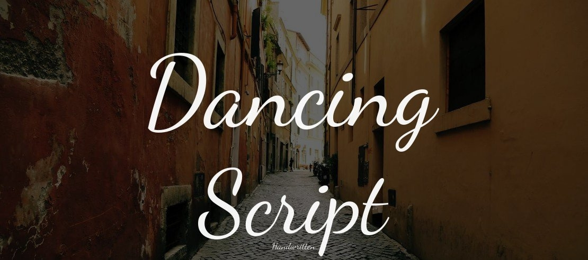
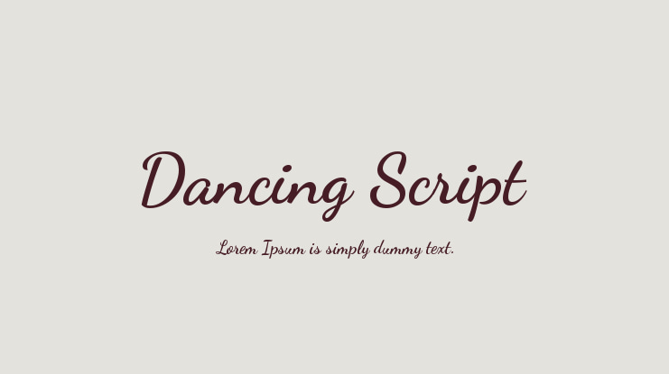

Aa
Montagu Slab
A bold slab serif typeface with a classic structure and a strong, distinctive personality.


Typefaces are an important part in designing. They help establish character and show brand identity all while conveying a message. It is important to have the write fonts and typefaces for your design, or else it can ruin it completely.
A bold slab serif typeface with a classic structure and a strong, distinctive personality.
Montagu Slab is a modern slab-serif display typeface designed by Florian Karsten. Montagu Slab is built as a variable font featuring weight and optical size axes.


Dancing Script is a lively, casual script typeface designed by Pablo Impallari (Impallari Type) and released in 2011. Letters subtly jump and shift in size along an irregular baseline, creating a playful, hand-lettered rhythm that gives the font its name.

